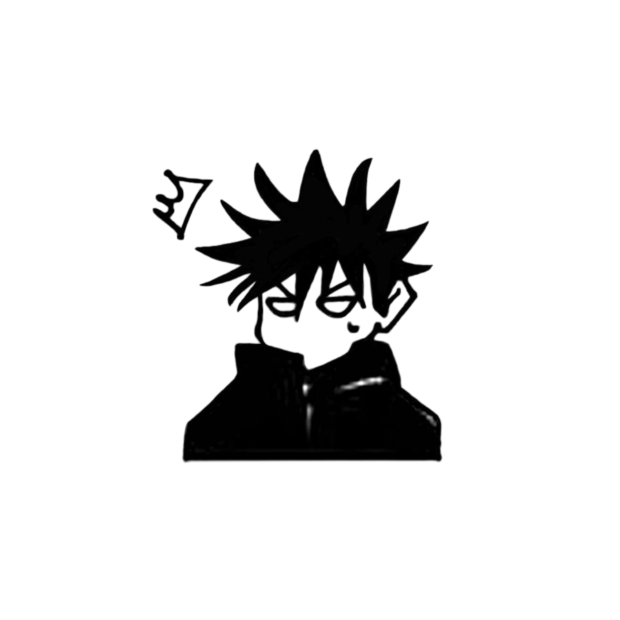

Técnicas Innatas
Habilidades únicas de nacimiento e irrepetibles.
Ejemplos: Ten Shadows (Megumi), Limitless (Gojo)十種影法術 (Tokusa no Kage Hōjutsu)



En el universo de Jujutsu Kaisen, una técnica maldita es una habilidad sobrenatural que usan los hechiceros. Se activan inyectando energía maldita en una fórmula o plano grabado en el cuerpo del usuario.
Solo algunos hechiceros nacen con una técnica innata, la cual está grabada en su cerebro desde el nacimiento.
Aparece alrededor de los 5 a 6 años de edad y define cerca del 80% del potencial de combate del hechicero.
Habilidades únicas de nacimiento e irrepetibles.
Ejemplos: Ten Shadows (Megumi), Limitless (Gojo)Manipulaciones genéricas de energía maldita que cualquiera puede aprender.
Ejemplos: Barreras, Cortinas, Estilo de SombraMegumi Fushiguro posee la Técnica de las Diez Sombras, heredada directamente del Clan Zen'in, uno de los tres grandes clanes de la hechicería.
Heredero del Clan Zen'in
Por sus venas corre la sangre de una de las estirpes más poderosas. Nació fuera del clan, pero heredó la habilidad más codiciada de la familia.
Herencia Genética y Carta de Triunfo
A pesar de no poseer energía maldita, Toji transmitió la técnica a Megumi, concibiéndolo como su carta de triunfo para venderlo al clan Zen'in.
La Técnica de las Diez Sombras (Ten Shadows Technique, 十種影法術 Jishu Kagehō) es una técnica maldita innata heredada que permite al usuario invocar hasta diez shikigami diferentes usando sus sombras como medio de invocación.

1. Concentración: Concentra energía maldita en su cuerpo.
2. Moldeo: Moldea la sombra (generalmente la suya propia) con las manos o los pies.
3. Manifestación: La sombra se transforma en el shikigami deseado.
Gestos mínimos: No necesita sellos de mano complejos; puede invocar a veces solo con la sombra de sus manos.
El Portal: Los shikigami emergen literalmente desde la sombra, no desde el aire.
Invocación Simultánea: Normalmente solo puede invocar un shikigami a la vez. Dentro de su Expansión de Dominio (Chimera Shadow Garden), puede invocar múltiples simultáneamente.
Almacenamiento en Sombras: Megumi puede guardar objetos (armas, herramientas malditas) dentro de sus sombras y sacarlos cuando los necesita. Por ejemplo, esconde cuchillas o amuletos en su sombra durante los combates.
Concepto Clave: Las sombras no son solo oscuridad, son un recurso táctico. Megumi puede esconderse, moverse, almacenar objetos y convocar criaturas desde ellas.